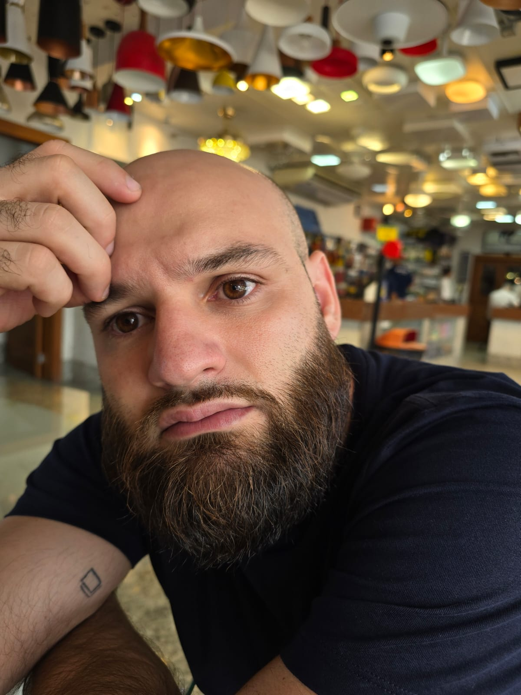

Genetics, improved by code.
Biologist, Biology Teacher (Elementary and High School) and PhD Candidate in Genetics and Breeding. Currently bridging the gap between life sciences and software development by exploring tools like R, Python, Dart/Flutter, and React/NextJS to visualize, solve and communicate complex problems in science.

— Charles Darwin
Profile Resume
Biologist with an M.Sc. in Animal Biology and currently a PhD Candidate in Genetics and Breeding at UFV. I work at the intersection of biological data analysis and software development, bridging the gap between public administration, school leadership, and advanced scientific research.
Lifetime CV
Featured Projects
EnvKernel Package
Implementing non-linear kernels for environmental covariate-based relationship matrices in R.
Source Code →QGSL Lab Website
Quantitative Genetics Statistical Learning Lab portal developed with React and NextJS.
Visit Lab Site →Published Papers
High Seasonal Variation of Plasma Testosterone Levels for a Tropical Grassland Bird Resembles Patterns of Temperate Birds
LOPES, L. E.; TEIXEIRA, J. P. G.; MEIRELES, R. C.; BASTOS, D. S. S.; DE OLIVEIRA, L. L.; SOLAR, R.
Soil attributes drive nest-site selection by the campo miner Geositta poeciloptera
MEIRELES, R. C.; TEIXEIRA, J. P. G.; SOLAR, R.; VASCONCELOS, B. N. F.; FERNANDES, R. B. A.; LOPES, L. E.
Reproductive functions in Desmodus rotundus: A comparison between seasons in a morphological context
SOUZA, A. C. F.; SANTOS, F. C.; BASTOS, D. S. S.; SERTORIO, M. N.; TEIXEIRA, J. P. G.; FERNANDES, K. M.; MACHADO-NEVES, M.
Breeding biology of the threatened Campo Miner Geositta poeciloptera (Aves: Scleruridae), a Neotropical grassland specialist
MACHADO, T. L. S. S.; LOMBARDI, V. T.; MEIRELES, R. C.; TEIXEIRA, J. P. G.; SOLAR, R.; LOPES, L. E.